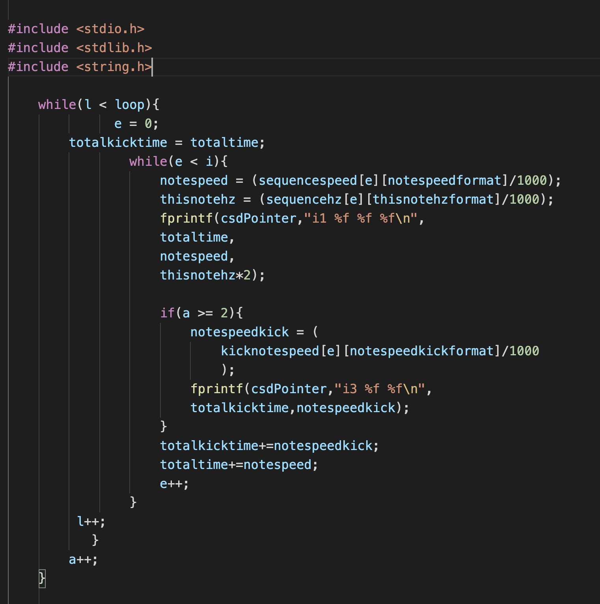

Projects All Web design Applications Web development Select category All Web design Applications Web development  Csound-Generative September 2015 Generative Music in C A simple yet powerful program written in C for algorithmic music generation.